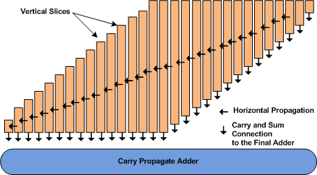

Greedy Partial Product Reduction Online Help
How to Run
This program can be used to analyze partial product reduction using the three greedy algorithm
. Hardware complexity and the details of the generated carry vectors are calculated for the bit width specified.
Delay calculation is made based on the various timing arcs specified for half adder and full adder. The current implementation of the algorithm assumes that the SUM signal delay is equal to or greater than the CARRY signal delay.
Following are the required timing arcs for full adders.
-
Delay from A to its Sum output (AtoS)
-
Delay from A to its Carry output (AtoCout)
-
Delay from Carry input to its Carry output (CinToCout)
- Delay from Carry input to its Sum output(CinToS)
Following are the required timing arcs for half adders.
-
Delay from A to its Sum output (AtoS)
-
Delay from A to its Carry output (AtoCout)
Algorithm and Output Table Description
In this algorithm, the reduction of partial product bits is performed by creating a vertical bit slice compressor for
each column. The size of each VCS is equal to the size of the vertical cross-section of the partial product matrix corresponding to that column.
Each VCS, then compresses the bits in a given column into two final bits, with carries generated at each level. These horizontal
carries are propagated to the next higher order VCS structure. Finally, these VCS structures are assembled
into an integral structure as shown in the figure below. (Redraw from [1])

After entering the required values in the form, click the
Compute button. This will display a table showing details of the partial product reduction based on the three greedy algorithm.
The columns displayed are the following
- Column 1:: VCS Number :- Vertical Compression Slice Number
- Column 2:: Initial #PPs :- Initial Number of partial products
- Column 3:: #Carries :- Number of CARRY inputs from previous column
- Column 4:: [CDV] :- Delay vector corresponding carries generated from the current VCS
- Column 5:: [C,S] :-Final CARRY and final SUM signal delays
- Column 6:: #HA :- Number of half adders used
- Column 7:: #FA :- Number of full adders used
- Column 8:: #Total :- Total number of hardware components used
References
- V.G. Oklobdzija, D. Villeger, and S.S. Liu,
“A method for speed optimized partial product reduction and
generation of fast parallel multipliers using an algorithmic approach,”
Computers, IEEE Transactions, no. 3 (1996): 294-306.
- P.F. Stelling et al., “Optimal circuits for parallel multipliers,”
Computers, IEEE Transactions, no. 3 (1998): 273-285.